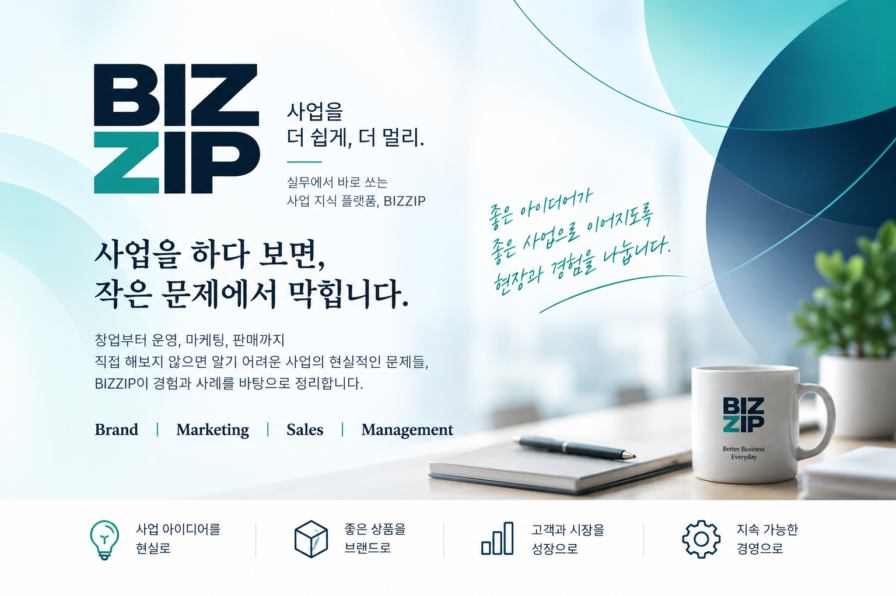

주식회사 아토세이프
온라인 커뮤니케이션
온라인 고객접점에서 상품과 브랜드가 보다 명확하게 전달될 수 있도록 커뮤니케이션 방향을 점검하고 개선 과제를 정리했습니다.
사업 현장에서 직접 부딪히는 작은 문제를 실무의 언어로 정리합니다.

소비재와 서비스, 유통, 건강기능식품 분야에서 오랫동안 상품기획, 브랜드, 마케팅, 영업과 사업운영을 경험했습니다. 대기업 브랜드 매니저부터 신규사업 총괄까지 현장에서 직접 겪은 경험을 바탕으로 사업자가 실제로 부딪히는 문제를 정리합니다.
BIZZIP의 콘텐츠는 실제 기업 컨설팅에서 다뤄온 문제와 실행 경험을 바탕으로 만들어집니다.
온라인 커뮤니케이션
온라인 고객접점에서 상품과 브랜드가 보다 명확하게 전달될 수 있도록 커뮤니케이션 방향을 점검하고 개선 과제를 정리했습니다.
신상품기획 및 컨셉개발
시장과 고객 관점에서 신상품 기회를 검토하고, 상품의 핵심 컨셉과 차별화 방향을 구체화했습니다.
신규 비즈니스 런칭
신규 사업의 시장 진입 방향과 상품·서비스 구성, 초기 실행과제를 정리하며 런칭 준비를 지원했습니다.
브랜드와 상품을 실제 시장에 내놓는 과정에서 컨셉개발, 리런칭, 상품기획과 런칭을 직접 경험했습니다.
신제품 컨셉개발
시장과 소비자 관점에서 새로운 제품 기회를 구체화하고 신제품 컨셉을 개발했습니다.
브랜드 리런칭
브랜드의 포지셔닝과 상품, 커뮤니케이션 방향을 재정비해 온라인 시장에 맞는 브랜드로 리런칭했습니다.
컨셉개발 및 상품기획·런칭
브랜드 컨셉개발부터 상품기획과 출시까지 연결해 신규 비타민 브랜드의 시장 진입을 진행했습니다.
시장과 고객을 읽는 방법, 그리고 온라인 사업에서 데이터를 실제 의사결정에 사용하는 방법을 책으로 정리했습니다.